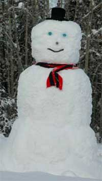

AlaskaStories.com
Alaska stories, if you can imagine such a thing.
Kick the chairs out of the way, shoot the top off the bottle of whiskey, crank up the rock and roll tunes, light the cigars, run the pitiable government chaps back into their hole, and this aint no bullshit...
Oh, stories are being added from time to time, albeit not many or often. The story guy, with gobs of outrageous not-sure-if-he-survived stories in the files, is busy with other websites, harassing the government with questions for which you want the answers, much to the anger of the government folks who perceive themselves to be above question. He is also slaving away to fix up the new AlaskanAlpineClub.org headquarters, drinking cheap wine for lack of money for better wine, keeping his rusted-out 35 year old jeep running to get to town, scrounge the dumpsters for useful things, haranguing colleagues with rhetorical theatrics over their failure to protect your rights for you, toiling at certain public benefit projects, and whatever else he claims to be doing as an excuse for the moment. But be patient. Something new may show up here. There are plenty of other websites to surf, equally boring. Now, wisely abandon the computer, and get back to something more productive.
Ice vault where the next Alaska Stories are secured.
Doug Buchanan
1957 Weston Dr.
Fairbanks, Alaska 99709
phone 907 479 2149
email - Doug at Buchanan.ws (replace at with @)

Oh, ah, and if you like what you read at this site, and you buy books, go to one of those bookstore places and see what a comparable book costs, and if you wish, send that trifling to Doug. He will thank you and pay his rent, web hosting fees, and buy more ammo to open the next bottle of whiskey or wine so he can keep his fingers tap-dancing on the keyboard. So far, after several years, as of June 2011, this website has been rewarded with a $10 donation, a ceramic mug and a bottle of Scottish barley juice. No wonder those other websites are so goobered-up with advertisements.
Aint this e-book thing great. The author keeps adding to the book, without charging you for another book or even the first one if you can't afford it. There was once a famous painter whose paintings were in museums. He kept getting caught in the museums with his paints and brushes, improving his paintings. These stories may become more accurate from time to time, when I brush in a few adjectives or events.
Ah, and if you have a government job, like I had in the past, and if you don't have a genuine sense of humor, find a government source for Alaska stories, because this site does not flatter the delicate egos of the poor sad sorts who have fallen victim to government jobs. It could be no other way and be written by an Alaskan.
Fasten your seat belt...
Stories 1
Stories 2
Stories 3
Stories 4
Stories 5
Stories 6
Stories 7
Stories 8
Stories 9
Stories 10
Stories 11
Stories 12
Stories 13
Stories 14 With recent additions
Places
Concepts
Smoking
Smoke Photos
Smoke Others
Stuff
Links And our Operative
Awards, Certificates and Illusions...
Low Altitude Lassitude Award, 2009, 2010
Writer Laziness Award 2010
Where's The New Stories Rebuke, 2010
Potential Excellence Certificate of 2009
Best Stories Award, 2000, 07
Rhetorical Illusion Award, 2002, 05, 08
This Aint No Bullshit Award, 2001, 04, 05, 07
The Prestigious Dribble Award 2001, 04, 08
Certificate for Excellence in ______
Hyperbole Award 2001, 04, 07
Accuracy in Political Comment Award 2000 - 2009
Whoyafoolin Award
Lies, All Lies Award
Unlimited Literary License Award
Certificate of Analytical Accuracy in Adventure
Last Award on the List, 2009
You Still Reading This?